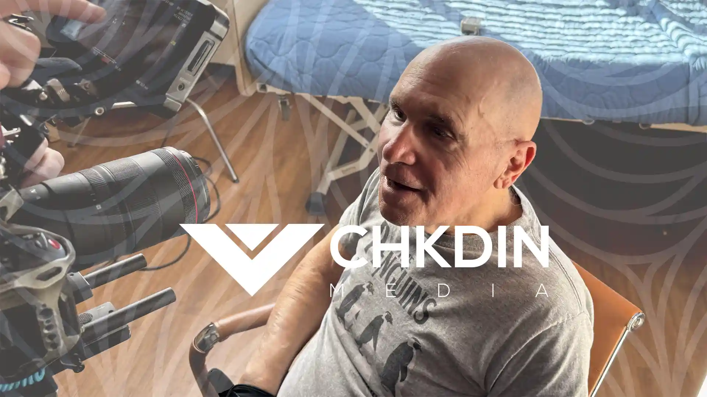

01
Brand and Sales Video
Hero videos, trust builders, customer stories, and sales enablement assets.

Checked In Media helps Wyoming and regional brands turn unclear messaging into sharper video, stronger websites, and campaign assets that make buyers feel confident faster.
This is one of the strongest things ProMedia does well. The page feels like a complete operation. Your version should package video, message strategy, web support, and campaign execution as one coherent growth service.
Hero videos, trust builders, customer stories, and sales enablement assets.
Short-form cutdowns, campaign clips, and recurring content that actually gets used.
Sharper page messaging, better structure, and media placed where it moves trust.
Launch-ready creative for web, social, retargeting, and local visibility pushes.

Rework your featured projects into challenge, execution, and impact. That gives this page the same confidence rhythm you liked, while still sounding like Checked In Media.
Your current site already has authority. What it needs is tighter packaging. This layout gets the trust signals above the fold faster and makes the business feel more strategic.
Another thing to borrow from ProMedia is operational confidence. Buyers should feel there is a clear way to work with you, not just a vague creative engagement.
Clarify the offer, audience, objections, and where current messaging is leaking trust.
Produce the hero video, sales support cuts, supporting images, and website messaging.
Place the assets where they influence buyer confidence: homepage, landing page, ads, and sales follow-up.
Use larger, cleaner project visuals. The site should feel closer to a strategic agency and less like a rolling article archive.

Use this slot for a polished business narrative with a two-line outcome summary.

Show the campaign mechanics: website, short-form clips, and lead-gen use case.

Frame this around how video shortens the trust gap before proposals and calls.
Keep the form short. You want a serious inquiry, not a homework assignment.
Static prototype for now. Your developer can wire this to Netlify Forms, Webflow, or CRM intake.
It keeps Checked In Media’s color language, project visuals, and Wyoming-market positioning, but borrows the cleaner service architecture and executive sales tone from ProMedia.